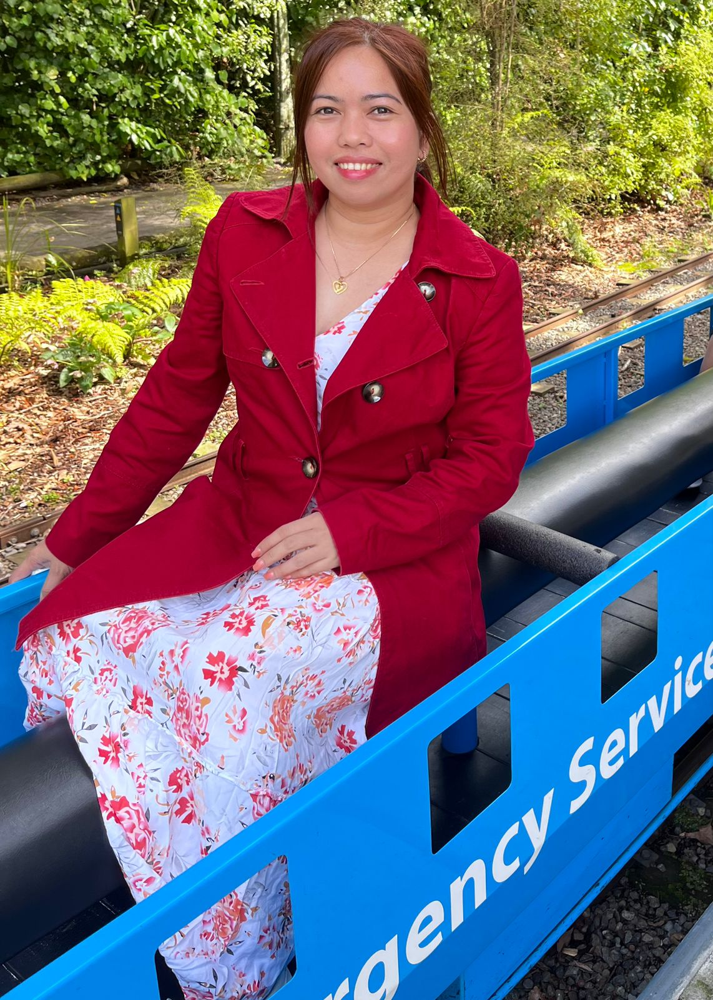

Hello! I’m Jalyn Pajulas
I’m a beginner web developer with a strong interest in building practical and interactive websites. I enjoy learning new technologies and improving my coding skills every day.
Skills I’m working on:
- HTML, CSS, and JavaScript
- Front-end frameworks like React.js
- Basic back-end development with Node.js
- Responsive design and user-friendly layouts
My goals:
- Create websites for clients and small businesses
- Develop a strong portfolio to showcase my work
- Continuously learn and improve as a web developer
- Master modern web technologies and frameworks (e.g., React, Vue, or Next.js).
- Build a personal brand online through a professional website or social media presence.
- Collaborate with other developers or designers on projects to gain experience.
- Learn about user experience (UX) and user interface (UI) design to make websites more appealing and effective.
- Offer freelance services consistently to generate income and client testimonials.
- Contribute to open-source projects to strengthen your skills and reputation.
- Stay updated on web development trends and best practices.
I also enjoy exploring nature, walking in forests, and learning about new cultures and places. This helps me stay creative and inspired in my projects.